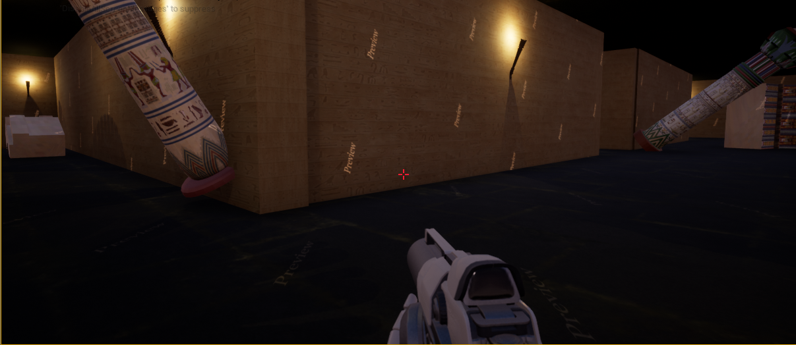
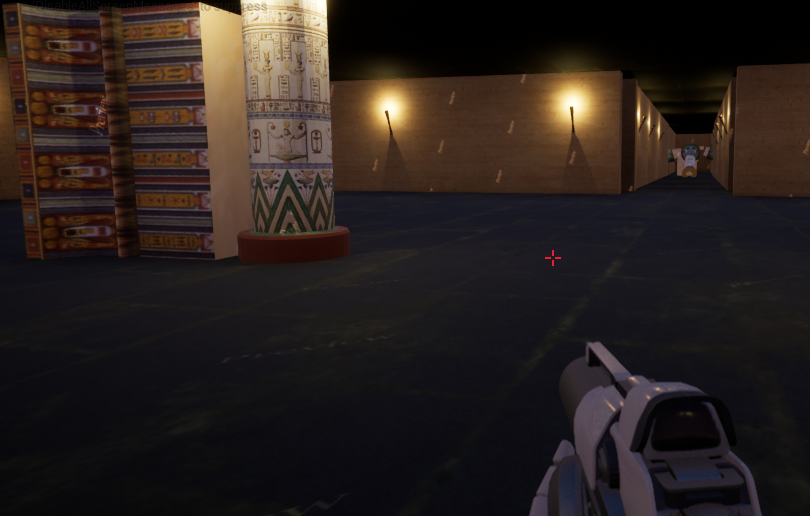

Temple of Nephthys
I did this project on Unreal Engine 4 and based my level on ancient Egyptian architecture. I used Blueprint to create visual effects for fire and put in event triggers at certain places. I utilized the terrain editor to create a landscape that resembled a desert, as well as using the materials editor to customize the look of my level. I also had to use Maya to create some of the 3D models and learned more about UV mapping.
Visual scripting was very foreign to me when I first started using it, but I found out easier to grasp with more practice. It was convenient to use when I had to instantiate or animate objects. The project definitely taught me a lot about good level design practices and looking at the puzzles through a player's lens, instead of a developer's.
